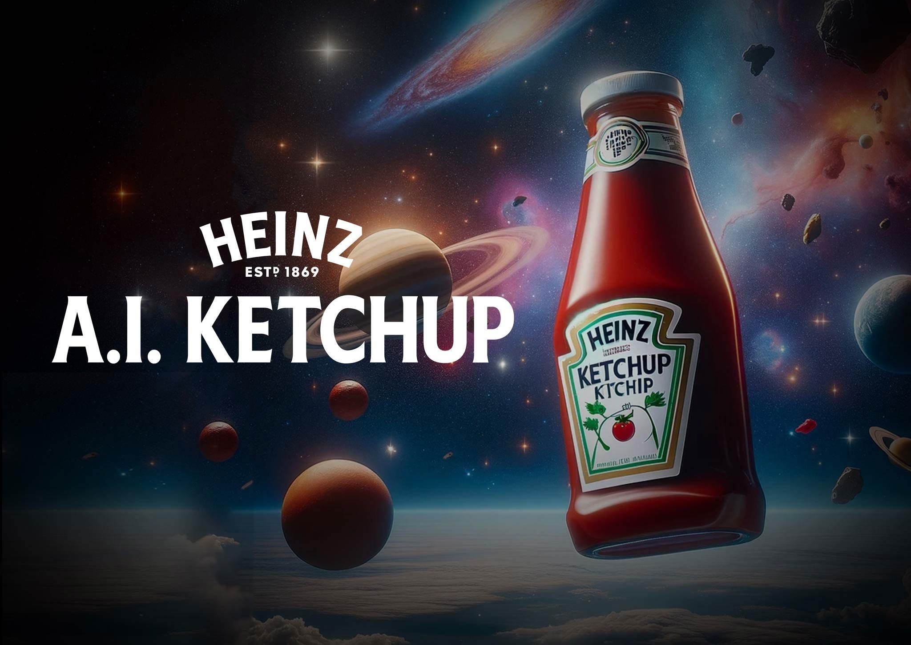

AI is notorious for adding a couple fingers on human hands because of their complicated structure. KFC used this to go along with their slogan, "The more fingers you have... the more you can lick".
They continued to show their love for AI art by generating more and more ads, effectively replacing their designers and artists with a machine.
2023 KFC ad
KFC ads have only gotten worse, lacking the originality and emotion that draws people in. No longer does the food look good, just silly and nonsensical. KFC continues to use generated works to represent their brand, creating a more robotic fake, and even cheap atmosphere.
Remember when people could draw?
1960-2000s KFC ad
Disney
2023 Thanksgiving "art" posted by Disney
This is where the images become creepy. While this was supposed to be celebrating Thanksgiving, the art style is so realistic in an uncanny valley way that it can only creep you out. Its style is also extremely inconsistent, showing the laziness and lack of passion that comes with ai.
What makes this worse is that there is a already a painting of this scene by Norman Rockwell, which is significantly better through its aesthetics and emotions. Its organic and soft style is friendly, being much more welcoming than the cold and robotic image that AI had come up with. Compared to the original, it is just a cheap knock-off.
Where's the magic?
THE ORIGINAL
Heinz Ketchup

2024 Heinz ad
This ad is a part of a series, "This is what ketchup looks like to AI. It's made up of a bunch of posters like this in which there are many bottles of ketchup placed in front of surreal backgrounds. None of it really makes sense. They look silly and unfinished, with the writing and label on the bottle being incorrect. It reads more as a beginner photoshop project than a professional ad."
Heinz ads used to be much more clever. They would use the design of their bottle and create scenes with it or simple use the shape of the bottle to create another image that would tie in with their brand. These were much more interesting and thought provoking, making a simple bottle of ketchup far more interesting.